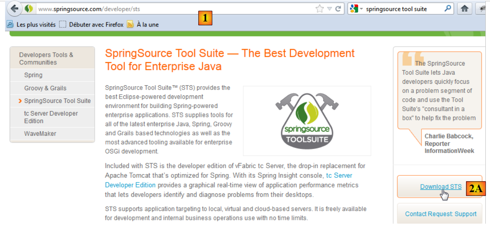
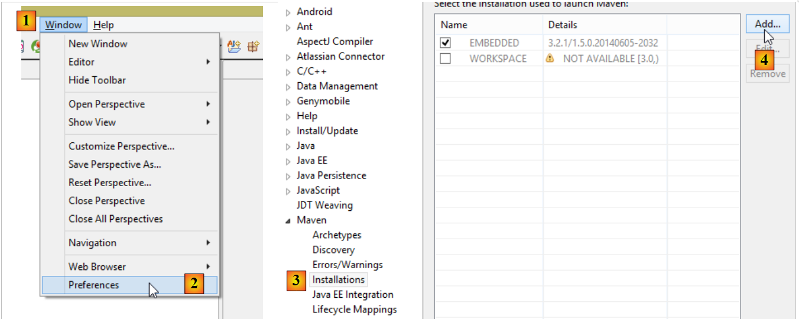
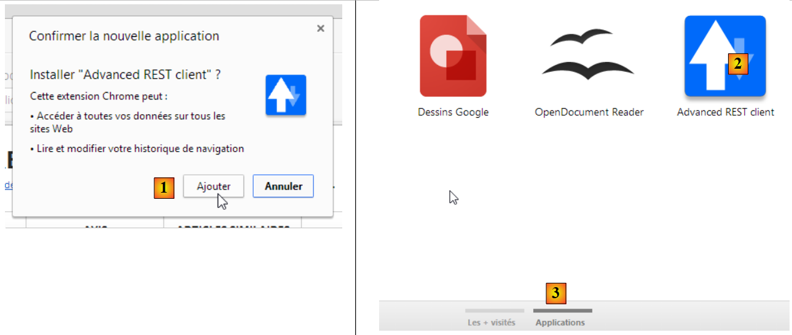
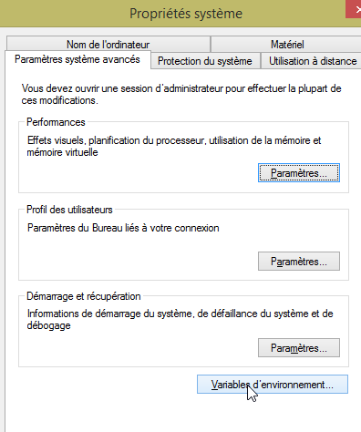
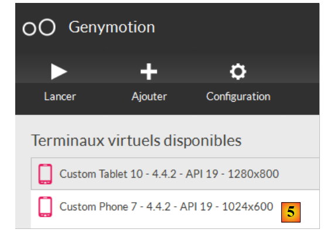

9. الملاحق
نشرح هنا كيفية تثبيت الأدوات المستخدمة في هذا المستند على أجهزة تعمل بنظام التشغيل Windows 7 أو 8.
9.1. تثبيت JDK
يمكن العثور على أحدث إصدار من JDK على الرابط [http://www.oracle.com/technetwork/java/javase/downloads/index.html] (أكتوبر 2014). سنشير إلى مجلد تثبيت JDK باسم <jdk-install> فيما يلي.
 |
9.2. تثبيت Maven
Maven هي أداة لإدارة التبعيات في مشروع Java وغير ذلك. وهي متاحة على [http://maven.apache.org/download.cgi].
 |
قم بتنزيل الأرشيف وفك ضغطه. سنشير إلى مجلد تثبيت Maven باسم <maven-install>.
 |
- في [1]، يقوم الملف [conf/settings.xml] بتكوين Maven؛
ويحتوي على الأسطر التالية:
<!-- localRepository
| The path to the local repository maven will use to store artifacts.
|
| Default: ${user.home}/.m2/repository
<localRepository>/path/to/local/repo</localRepository>
-->
القيمة الافتراضية في السطر 4، إذا كان مسار {user.home} الخاص بك يحتوي على مسافة (على سبيل المثال [C:\Users\Serge Tahé])، كما هو الحال معي، فقد يتسبب ذلك في حدوث مشكلات مع بعض البرامج، بما في ذلك IntelliJ IDEA. في هذه الحالة، يجب عليك كتابة شيء مثل:
<!-- localRepository
| The path to the local repository maven will use to store artifacts.
|
| Default: ${user.home}/.m2/repository
<localRepository>/path/to/local/repo</localRepository>
-->
<localRepository>D:\Programs\devjava\maven\.m2\repository</localRepository>
وفي السطر 7، تجنب استخدام مسار يحتوي على مسافات.
9.3. تثبيت STS (Spring Tool Suite)
سنقوم بتثبيت SpringSource Tool Suite [http://www.springsource.com/developer/sts]، وهي بيئة Eclipse مهيأة مسبقًا بالعديد من المكونات الإضافية المتعلقة بإطار عمل Spring، بالإضافة إلى تكوين Maven مثبت مسبقًا.
 |
- انتقل إلى موقع SpringSource Tool Suite (STS) [1] لتنزيل الإصدار الحالي من STS [2A] [2B].
 |
 |
- الملف الذي تم تنزيله هو برنامج تثبيت يقوم بإنشاء بنية دليل الملفات [3A] [3B]. في [4]، نقوم بتشغيل الملف القابل للتنفيذ،
- في [5]، نرى نافذة مساحة عمل IDE بعد إغلاق نافذة الترحيب. في [6]، تظهر نافذة خوادم التطبيقات،
 |
- في [7]، نافذة الخوادم. تم تسجيل خادم. إنه خادم VMware متوافق مع Tomcat.
يجب تحديد دليل تثبيت Maven لـ STS:
 |
- في [1-2]، قم بتكوين STS؛
- في [3-4]، أضف تثبيتًا جديدًا لـ Maven؛
 |
- في [5]، حدد دليل تثبيت Maven؛
- في [6]، أكمل المعالج؛
- في [7]، قم بتعيين تثبيت Maven الجديد كإعداد افتراضي؛
 |
- في [8-9]، تحقق من مستودع Maven المحلي — المجلد الذي سيتم فيه تخزين التبعيات التي يتم تنزيلها والمكان الذي سيضع فيه STS العناصر التي تم إنشاؤها؛
9.4. تثبيت خادم Tomcat
تتوفر خوادم Tomcat على الرابط [http://tomcat.apache.org/download-80.cgi]. تم اختبار الأمثلة الواردة في هذا المستند باستخدام الإصدار 8.0.9، المتوفر على الرابط [http://archive.apache.org/dist/tomcat/tomcat-8/v8.0.9/bin/].
 |
قم بتنزيل [1] ملف ZIP المناسب لمحطة العمل الخاصة بك. بمجرد فك ضغط الملف، سترى بنية الدليل [2]. بمجرد الانتهاء من ذلك، يمكنك إضافة هذا الخادم إلى خوادم STS:
 |
- في [1-3]، أضف خادمًا جديدًا في STS؛ (لفتح نافذة "الخوادم"، انتقل إلى "نافذة" / "إظهار العرض" / "أخرى" / "الخادم" / "الخوادم")؛
 |
- في [5]، حدد خادم Tomcat 8؛
- في [6]، قم بتسمية هذا الخادم؛
- في [8]، حدد دليل التثبيت لـ Tomcat الذي تم تنزيله مسبقًا؛
- في [9]، الخادم الجديد؛
 |
- في [11-12]، قم بتشغيل خادم Tomcat 8؛
- في [13-14]، نافذة السجل الخاصة به؛
- في [15]، لإيقافه؛
9.5. تثبيت [WampServer]
[WampServer] هو ، وهو مجموعة برامج للتطوير باستخدام PHP و MySQL و Apache على جهاز يعمل بنظام Windows. سنستخدمه حصريًا لنظام إدارة قواعد البيانات MySQL.
 |
- على موقع [WampServer] [1]، اختر الإصدار المناسب [2].
- الملف القابل للتنفيذ الذي تم تنزيله هو برنامج تثبيت. يُطلب منك إدخال معلومات مختلفة أثناء التثبيت. هذه المعلومات لا تتعلق بـ MySQL، لذا يمكنك تجاهلها. تظهر النافذة [3] في نهاية عملية التثبيت. قم بتشغيل [WampServer]،
 |
- في [4]، يظهر رمز [WampServer] في شريط المهام أسفل يمين الشاشة [4]،
- وعند النقر عليه، تظهر قائمة [5]. تتيح لك هذه القائمة إدارة خادم Apache ونظام إدارة قواعد البيانات MySQL. لإدارة هذا الأخير، استخدم خيار [PhpMyAdmin]،
- الذي يفتح النافذة الموضحة أدناه،

سنقدم هنا بعض التفاصيل حول كيفية استخدام [PhpMyAdmin]. يوفر المستند المعلومات الضرورية عند الحاجة.
9.6. تثبيت المكون الإضافي لمتصفح Chrome [Advanced Rest Client]
في هذا المستند، نستخدم متصفح Chrome من Google (http://www.google.fr/intl/fr/chrome/browser/). سنقوم بإضافة ملحق [Advanced Rest Client] إليه. وإليك كيفية القيام بذلك:
- انتقل إلى [متجر Google الإلكتروني] (https://chrome.google.com/webstore) باستخدام متصفح Chrome؛
- ابحث عن تطبيق [Advanced Rest Client]:
 |
- يصبح التطبيق متاحًا للتنزيل بعد ذلك:
 |
- للحصول عليه، ستحتاج إلى إنشاء حساب Google. سيطلب منك [متجر Google الإلكتروني] بعد ذلك تأكيدًا [1]:
 |
- في [2]، يتوفر الملحق المضاف في خيار [التطبيقات] [3]. يظهر هذا الخيار في كل علامة تبويب جديدة تنشئها (CTRL-T) في المتصفح.
9.7. إدارة JSON في Java
بشكل شفاف للمطور، يستخدم إطار عمل [Spring MVC] مكتبة [Jackson] JSON. لتوضيح ماهية JSON (ترميز كائنات JavaScript)، نقدم هنا برنامجًا يقوم بتسلسل الكائنات إلى JSON ويقوم بالعكس عن طريق فك تسلسل سلاسل JSON التي تم إنشاؤها لإعادة إنشاء الكائنات الأصلية.
تسمح لك مكتبة "Jackson" بإنشاء:
- سلسلة JSON لكائن: new ObjectMapper().writeValueAsString(object);
- كائن من سلسلة JSON: new ObjectMapper().readValue(jsonString, Object.class).
قد ترمي كلتا الطريقتين استثناء IOException. إليك مثال على ذلك.
 |
المشروع أعلاه هو مشروع Maven يحتوي على ملف [pom.xml] التالي؛
<?xml version="1.0" encoding="UTF-8"?>
<project xmlns="http://maven.apache.org/POM/4.0.0"
xmlns:xsi="http://www.w3.org/2001/XMLSchema-instance"
xsi:schemaLocation="http://maven.apache.org/POM/4.0.0 http://maven.apache.org/xsd/maven-4.0.0.xsd">
<modelVersion>4.0.0</modelVersion>
<groupId>istia.st.pam</groupId>
<artifactId>json</artifactId>
<version>1.0-SNAPSHOT</version>
<dependencies>
<dependency>
<groupId>com.fasterxml.jackson.core</groupId>
<artifactId>jackson-databind</artifactId>
<version>2.3.3</version>
</dependency>
</dependencies>
</project>
- الأسطر 12–16: التبعية التي تستدعي مكتبة 'Jackson'؛
فئة [Person] هي كما يلي:
package istia.st.json;
public class Personne {
// data
private String nom;
private String prenom;
private int age;
// manufacturers
public Personne() {
}
public Personne(String nom, String prénom, int âge) {
this.nom = nom;
this.prenom = prénom;
this.age = âge;
}
// signature
public String toString() {
return String.format("Personne[%s, %s, %d]", nom, prenom, age);
}
// getters and setters
...
}
فئة [Main] هي كما يلي:
package istia.st.json;
import com.fasterxml.jackson.databind.ObjectMapper;
import java.io.IOException;
import java.util.HashMap;
import java.util.Map;
public class Main {
// the serialization / deserialization tool
static ObjectMapper mapper = new ObjectMapper();
public static void main(String[] args) throws IOException {
// creation of a person
Personne paul = new Personne("Denis", "Paul", 40);
// display jSON
String json = mapper.writeValueAsString(paul);
System.out.println("Json=" + json);
// person instantiation from Json
Personne p = mapper.readValue(json, Personne.class);
// person display
System.out.println("Personne=" + p);
// a picture
Personne virginie = new Personne("Radot", "Virginie", 20);
Personne[] personnes = new Personne[]{paul, virginie};
// json display
json = mapper.writeValueAsString(personnes);
System.out.println("Json personnes=" + json);
// dictionary
Map<String, Personne> hpersonnes = new HashMap<String, Personne>();
hpersonnes.put("1", paul);
hpersonnes.put("2", virginie);
// json display
json = mapper.writeValueAsString(hpersonnes);
System.out.println("Json hpersonnes=" + json);
}
}
يؤدي تنفيذ هذه الفئة إلى إخراج الشاشة التالي:
النقاط الرئيسية المستفادة من المثال:
- كائن [ObjectMapper] المطلوب لتحويلات JSON/Object: السطر 11؛
- تحويل [Person] --> JSON: السطر 17؛
- تحويل JSON --> [Person]: السطر 20؛
- استثناء [IOException] الذي تم إلقائه بواسطة كلتا الطريقتين: السطر 13.
9.8. تثبيت [WebStorm]
[WebStorm] (WS) هو IDE من JetBrains لتطوير تطبيقات HTML/CSS/JS. وجدته مثاليًا لتطوير تطبيقات Angular. موقع التنزيل هو [http://www.jetbrains.com/webstorm/download/]. إنه IDE مدفوع، ولكن تتوفر نسخة تجريبية لمدة 30 يومًا للتنزيل. هناك إصدارات شخصية وإصدارات للطلاب بأسعار معقولة.
لتثبيت مكتبات JS داخل التطبيق، يستخدم WS أداة تسمى [Bower]. هذه الأداة هي وحدة نمطية من [Node.js]، وهي مجموعة من مكتبات JS. بالإضافة إلى ذلك، يتم جلب مكتبات JS من مستودع Git، مما يتطلب وجود عميل Git على الجهاز الذي يقوم بالتنزيل.
9.8.1. تثبيت [node.js]
موقع تنزيل [node.js] هو [http://nodejs.org/]. قم بتنزيل المثبت وتشغيله. هذا كل ما عليك فعله في الوقت الحالي.
9.8.2. تثبيت أداة [bower]
يمكن تثبيت أداة [bower]، التي تتيح لك تنزيل مكتبات JavaScript، بعدة طرق. سنقوم بتثبيتها من سطر الأوامر:
C:\Users\Serge Tahé>npm install -g bower
C:\Users\Serge Tahé\AppData\Roaming\npm\bower -> C:\Users\Serge Tahé\AppData\Roaming\npm\node_modules\bower\bin\bower
bower@1.3.7 C:\Users\Serge Tahé\AppData\Roaming\npm\node_modules\bower
├── stringify-object@0.2.1
├── is-root@0.1.0
├── junk@0.3.0
...
├── insight@0.3.1 (object-assign@0.1.2, async@0.2.10, lodash.debounce@2.4.1, req
uest@2.27.0, configstore@0.2.3, inquirer@0.4.1)
├── mout@0.9.1
└── inquirer@0.5.1 (readline2@0.1.0, mute-stream@0.0.4, through@2.3.4, async@0.8
.0, lodash@2.4.1, cli-color@0.3.2)
- السطر 1: الأمر [node.js] الذي يقوم بتثبيت وحدة [bower]. لكي يعمل الأمر، يجب أن يكون الملف القابل للتنفيذ [npm] موجودًا في مسار PATH الخاص بالجهاز (انظر القسم أدناه)؛
9.8.3. تثبيت [Git]
Git هو نظام للتحكم في إصدارات البرامج. هناك إصدار لـ Windows يسمى [msysgit] متاح على الرابط [http://msysgit.github.io/]. لن نستخدم [msysgit] لإدارة إصدارات تطبيقنا، بل فقط لتنزيل مكتبات JS الموجودة على مواقع مثل [https://github.com]، والتي تتطلب بروتوكول وصول خاص يوفره عميل [msysgit]
يقدم معالج التثبيت عدة خطوات، بما في ذلك ما يلي:
 |  |
بالنسبة لخطوات التثبيت الأخرى، يمكنك قبول القيم الافتراضية المتوفرة.
بمجرد تثبيت Git، تحقق من أن الملف القابل للتنفيذ موجود في مسار PATH بجهازك: [لوحة التحكم / النظام والأمان / النظام / إعدادات النظام المتقدمة]:
 |  |
تبدو متغير PATH كما يلي:
D:\Programs\devjava\java\jdk1.7.0\bin;D:\Programs\ActivePerl\Perl64\site\bin;D:\Programs\ActivePerl\Perl64\bin;D:\Programs\sgbd\OracleXE\app\oracle\product\11.2.0\client;D:\Programs\sgbd\OracleXE\app\oracle\product\11.2.0\client\bin;D:\Programs\sgbd\OracleXE\app\oracle\product\11.2.0\server\bin;...;D:\Programs\javascript\node.js\;D:\Programs\utilitaires\Git\cmd
تأكد من:
- وجود مسار مجلد تثبيت [node.js] (هنا D:\Programs\javascript\node.js)؛
- وجود مسار الملف القابل للتنفيذ لعميل Git (هنا D:\Program Files\Utilities\Git\cmd)؛
9.8.4. تكوين [WebStorm]
دعونا الآن نتحقق من تكوين [WebStorm]
 |  |
 |
أعلاه، حدد الخيار [1]. ستظهر قائمة وحدات [node.js] المثبتة بالفعل في [2]. يجب أن تحتوي هذه القائمة على السطر [3] الخاص بوحدة [bower] فقط إذا كنت قد اتبعت عملية التثبيت السابقة.
9.9. تثبيت محاكي Android
المحاكيات المرفقة مع Android SDK بطيئة، مما يثني عن استخدامها. تقدم شركة [Genymotion] محاكيًا أقوى بكثير. وهو متاح على الرابط [https://cloud.genymotion.com/page/launchpad/download/]
(فبراير 2014).
ستحتاج إلى التسجيل للحصول على نسخة للاستخدام الشخصي. قم بتنزيل منتج [Genymotion] مع الجهاز الظاهري VirtualBox؛

قم بتثبيت [Genymotion] ثم تشغيله. بعد ذلك، قم بتنزيل صورة لجهاز لوحي أو هاتف:
 |
- في [1]، أضف جهازًا افتراضيًا؛
- في [2]، اختر جهازًا واحدًا أو أكثر لتثبيته. يمكنك تصفية القائمة المعروضة عن طريق تحديد إصدار Android المطلوب [3] وطراز الجهاز [4]؛
 |
- بمجرد اكتمال التنزيل، سترى في [5] قائمة بالأجهزة الافتراضية المتاحة لاختبار تطبيقات Android الخاصة بك؛